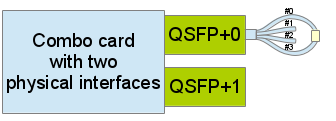
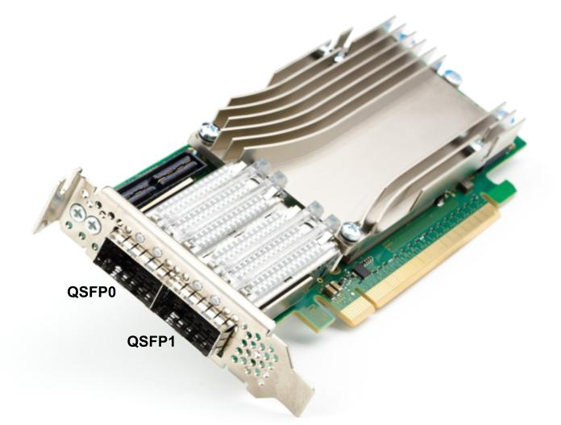
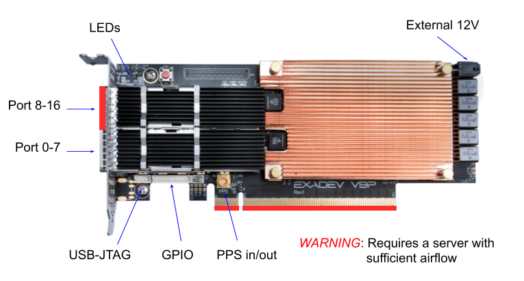
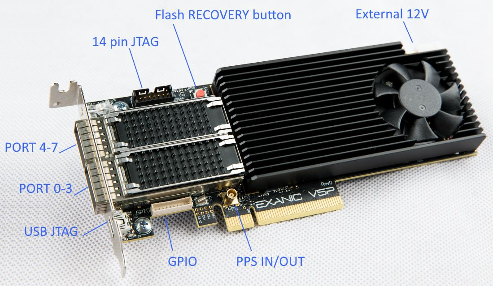
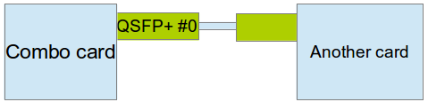
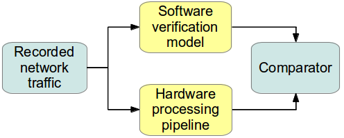

Software model, simulation and verification
Overview
Software model is a software application which works in the same way as Magmio firmware does. Its advantage is the ability to run without time consuming synthesis (as it is necessary for Magmio firmware after every modification of strategies). Its disadvantages are lower throughput and high requirements on computer performance.
Model can be used in two scenarios:
- Offline verification based on comparison of firmware pipeline and software model outputs
- Simulation of PCAP trace for observing outputs for written strategy
It is possible to generate software model for any strategy by invoking following command in sources directory src/ of particular strategy:
$ make model
This command creates a new directory ~/my-local/strategies/<strategy>/model/ by copying strategies.cpp/.h from ~/my-local/strategies/<strategy>/src/ directory and compiling with model libraries to create executables for offline verification as well as for PCAP trace simulation.
Note
Model has to be re-created after every modification of user strategy code.
Traffic recording and replaying
Before working with software model, it is necessary to have access to recorded traffic from the market that will be used for simulation or verification. When doing verification, FPGA card must be configured properly for traffic replaying as well.
Recording of incoming traffic
To start recording of incoming traffic (both multicast and unicast data are supported), Magmio API method stream.pcap.record("myfile.pcap") needs to be invoked. Traffic recording is stopped automatically when Magmio API stops or can be stopped manually by invoking method stream.pcap.stop().
Replaying traffic
When replaying traffic into the card (e.g. during offline verification), recorded PCAP trace needs to be transmitted into the card’s physical interface #0. There are two ways how to replay the trace.
- Use physical interface other than #0 for transmitting PCAP data via loop-back to interface #0. The exact interface capable of replaying PCAP data is reported by API, when a user application is executed (i.e.: api-example). The following diagram shows the connection of physical interface #3 (replay port for PCAP out) to physical interface #0 (multicast port for market data in).
Note
This feature is disabled by default, it is possible to enable it by changing configuration in HW. Contact us for more information.

The naming convention of the NFB-200G2QL card interfaces is shown in the following picture. Both physical QSPF+ interfaces are composed of 4 TX/RX pairs, totalling for 8 pairs per card. First four pairs (#0 - 3) come from QSPF+0 interface and the rest (#4 - 7) belongs to QSPF+1 interface.

Similarly, the naming convention of the Cisco card interfaces is shown in the following pictures (Cisco Nexus V9P followed by Cisco Nexus V5P). Cisco cards support at most 8 RX/TX pairs per cage, totalling for 16 pairs per card. First eigth pairs (#0 - 7) come from QSPF-DD0 interface and the rest (#8 - 15) belongs to QSPF-DD1 interface.


- Use separate network interface card for sending data to FPGA card interface #0 
There are several tools for transmitting PCAP trace, e.g. sze2write (only NFB-200G2QL cards) or tcpreplay (both cards):
$ sze2write -i 2 -f trace.pcap
$ tcpreplay -i sze0.2 trace.pcap
$ tcpreplay -i enp179s0d2 trade.pcap
Note
Example commands above assume loop-back configuration. Interface sze0.2 identifies a card in position 0 and DMA channel 2. Specific sze interface is reported by api debug messages. Interface enp179s0d2 identifies DMA channel 2 of a card.
Note
Use -M <speed> parameter for tcpreplay tool to force speed of traffic replaying. Decrease the speed in case of packet overflow appears.
Packet overflow
If the transmitting speed is too high, some packets may be lost on the interface #0 because of input buffer overflow. Use command ibufctl -i 0 (on NFB-200G2QL cards) or exanic-config (on Cisco cards) to observe packet statistics.
Example output (NFB-200G2QL card):
----------------------------- IBUF Status ------------------------------
Interface number : 0
Link status : ON
IBUF : ENABLED
PACODAG overflow occurred : False
DFIFO overflow occurred : False
IBUF speed : 10 Gb/s
----------------------------- IBUF Packets/Frames Stats --------
Packets : 282905
Received : 282905
Discarded : 0
Buf overflow : 0
Error packets : 0
----------------------------- IBUF Settings ---------------------------
Frame error from MII [1] : enabled
CRC check [2] : enabled
Minimum frame length [4] : enabled
* length : 64 B
MTU frame length [8] : enabled
* length : 1526 B (max 16352 B)
MAC address check [16] : enabled
* mode : [0x0] promiscuous
Maximal MAC addresses : 16
NFB-200G2QL card output lines labelled Discarded, Buf overflow, and Error packets should be zero, otherwise some packets were lost.
Example output (Cisco card):
...
Port 0:
Interface: enp179s0
Port speed: 10000 Mbps
Port status: disabled, SFP present, no link
Promiscuous mode: on
Bypass-only mode: on
MAC address: bc:d2:95:95:50:00
RX packets: 15639 ignored: 0 error: 0 dropped: 0
TX packets: 412
...
Cisco card output lines labelled ignored, dropped, and error should be zero, otherwise some packets were lost.
Offline verification
Verification of Magmio application is based on comparing outputs of firmware and software model when processing recorded traffic.
Important
Offline verification serves primarily only for internal development, testing and verification by Magmio employees. Despite its main purpose, offline verification is still available to the end customers as an optional method. We do not expect customers to actively use offline verification.
Warning
Offline verification through verification_model supports currently only NFB-200G2QL cards (not available for Cisco cards yet).

Warning
It is unrecommended to do verification with live market data because of the low throughput of the software model.
For verification, run software model with following parameters:
$ cd ~/my-local/strategies/<strategy>/model/
$ ./verification_model -f ../build/<market>_<build_timestamp>.bit
-m ../../../configs/<market>/mapping.txt
-c ../../../configs/<market>/api.xml
-s
When -s parameter is used, Magmio application verifies output from Strategy engine. Output from Enhanced Top of Book and Decoder can be verified as well:
-d- Decoder-e- Enhanced Top of Book-s- Strategy Engine
Warning
Only one unit output can be verified during the model run.
Example of software model verification output:
+=========================================================================================================================+
| Info channel |
+ ----------------------------- + ------------------------------------- + ------------------------------------- + ------- +
| Field | SW output | HW output | |
+ ----------------------------- + ------------------------------------- + ------------------------------------- + ------- +
| Exchange time | 1559641512124926404 | 1559641512124926404 | OK |
| Flags | 1 | 1 | OK |
| Channel ID | 0 | 0 | OK |
| Packet seqnum | 789814 | 789814 | OK |
| Message seqnum | 836624 | 836624 | OK |
| Decoder seqnum | 1 | 1 | OK |
| Enfeed seqnum | 1 | 1 | OK |
| Message type | 44 | 44 | OK |
| Message content | 200 Bytes | 200 Bytes | OK |
| Decoded Msg 0x00 | 2c409c00 00000000 | 2c409c00 00000000 | OK |
| 0x08 | 0000000f 19174d00 | 0000000f 19174d00 | OK |
| ... | ... | ... | ... |
| 0xc0 | 00000000 00000000 | 00000000 00000000 | OK |
===========================================================================================================================
| Enhanced Top of Book output |
+ ----------------------------- + ------------------------------------- + ------------------------------------- + ------- +
| Field | SW output | HW output | |
+ ----------------------------- + ------------------------------------- + ------------------------------------- + ------- +
| SID | 2479938 | 2479938 | OK |
| MSID | 0 | 0 | OK |
+ ----------------------------- + ------------------------------------- + ------------------------------------- + ------- +
| Previous Top of Book - common |
+ ----------------------------- + ------------------------------------- + ------------------------------------- + ------- +
| Status | 0 | 0 | OK |
| Timestamp | 0 | 0 | OK |
| Last trade Mantisa | 0 | 0 | OK |
| Last trade Exponent | 0 | 0 | OK |
| Last trade Valid | 0 | 0 | OK |
+ ----------------------------- + ------------------------------------- + ------------------------------------- + ------- +
| Previous Top of Book [level 0] |
+ ----------------------------- + ------------------------------------- + ------------------------------------- + ------- +
| Bid Mantisa | 0 | 0 | OK |
| Bid Exponent | 0 | 0 | OK |
| Bid Size | 0 | 0 | OK |
| Bid Customer Size | 0 | 0 | OK |
| Bid Secondary Size | 0 | 0 | OK |
| Bid Lvl. Timestamp | 0 | 0 | OK |
| Bid Valid | 0 | 0 | OK |
| Bid Error | 0 | 0 | OK |
| Ask Mantisa | 0 | 0 | OK |
| Ask Exponent | 0 | 0 | OK |
| Ask Size | 0 | 0 | OK |
| Ask Customer Size | 0 | 0 | OK |
| Ask Secondary Size | 0 | 0 | OK |
| Ask Lvl. Timestamp | 0 | 0 | OK |
| Ask Valid | 0 | 0 | OK |
| Ask Error | 0 | 0 | OK |
+ ----------------------------- + ------------------------------------- + ------------------------------------- + ------- +
| Current Top of Book - common |
+ ----------------------------- + ------------------------------------- + ------------------------------------- + ------- +
| Status | 0 | 0 | OK |
| Timestamp | 0 | 0 | OK |
| Last trade Mantisa | 0 | 0 | OK |
| Last trade Exponent | 0 | 0 | OK |
| Last trade Valid | 0 | 0 | OK |
+ ----------------------------- + ------------------------------------- + ------------------------------------- + ------- +
| Current Top of Book [level 0] |
+ ----------------------------- + ------------------------------------- + ------------------------------------- + ------- +
| Bid Mantisa | 331100000000 | 331100000000 | OK |
| Bid Exponent | 0 | 0 | OK |
| Bid Size | 40000 | 40000 | OK |
| Bid Customer Size | 1 | 1 | OK |
| Bid Secondary Size | 0 | 0 | OK |
| Bid Lvl. Timestamp | 0 | 0 | OK |
| Bid Valid | 1 | 1 | OK |
| Bid Error | 0 | 0 | OK |
| Ask Mantisa | 0 | 0 | OK |
| Ask Exponent | 0 | 0 | OK |
| Ask Size | 0 | 0 | OK |
| Ask Customer Size | 0 | 0 | OK |
| Ask Secondary Size | 0 | 0 | OK |
| Ask Lvl. Timestamp | 0 | 0 | OK |
| Ask Valid | 0 | 0 | OK |
| Ask Error | 0 | 0 | OK |
===========================================================================================================================
| Strategy, params, pre-trade |
+ ----------------------------- + ------------------------------------- + ------------------------------------- + ------- +
| Field | SW output | HW output | |
+ ----------------------------- + ------------------------------------- + ------------------------------------- + ------- +
| Strategy / pre-trade output 0 |
+ ----------------------------- + ------------------------------------- + ------------------------------------- + ------- +
| Ask price | 331100000000 | 331100000000 | OK |
| Bid price | 0 | 0 | OK |
| Ask size | 40000 | 40000 | OK |
| Bid size | 0 | 0 | OK |
| Minimum QTY | 100 | 100 | OK |
| Side | 2 | 2 | OK |
| Order type | 2 | 2 | OK |
| Position | 1 | 1 | OK |
| Time In Force | 3 | 3 | OK |
| Display | 1 | 1 | OK |
| ISO | 2 | 2 | OK |
| User tag | 0 | 0 | OK |
| Session | 0 | 0 | OK |
| Order ID | 65206000 | 65206000 | OK |
| Generate order | 1 | 1 | OK |
| Pre-Trade status | disabled | disabled | OK |
| Too Low Price | false | false | OK |
| Too High Price | false | false | OK |
| Too Low Size | false | false | OK |
| Too High Size | false | false | OK |
+ ----------------------------- + ------------------------------------- + ------------------------------------- + ------- +
When a verification is finished, verification model prints and compares statistics of data (packets and messages) processed through each module of trading pipeline.
Example output when comparing Strategy Engine:
=========================================================================================
| Statistics of processed data |
+ --------------------------------------------- + ------------- + ------------- + ----- +
| Field | SW output | HW output | |
+ --------------------------------------------- + ------------- + ------------- + ----- +
| Packet filter 0 - received packets | 254 | 254 | OK |
| Packet filter 0 - discarded packets | 248 | 248 | OK |
| Packet filter 0 - bad CRC packets | 0 | 0 | OK |
| Packet filter 0 - passed to SW | 0 | 0 | OK |
| Packet filter 0 - overflow SW | 0 | 0 | OK |
| Packet filter 0 - passed market | 6 | 6 | OK |
| Packet filter 0 - overflow market | 0 | 0 | OK |
| Packet filter 0 - passed ord.dec | 0 | 0 | OK |
| Packet filter 0 - overflow ord.dec | 0 | 0 | OK |
| Arbitrage 0 - received packets | 6 | 6 | OK |
| Arbitrage 0 - discarded packets | 0 | 0 | OK |
| Arbitrage 0 - processed packets | 6 | 6 | OK |
| Arbitrage 0 - not found packets | 0 | 0 | OK |
| Recovery buffer 0 - received packets | 6 | 6 | OK |
| Recovery buffer 0 - forwarded packets | 3 | 3 | OK |
| Recovery buffer 0 - dropped packets | 3 | 3 | OK |
| Recovery buffer 0 - replayed packets | 0 | 0 | OK |
| Recovery buffer 0 - total packets out | 3 | 3 | OK |
| Decoder 0 - received packets | 3 | 3 | OK |
| Decoder 0 - exported messages | 5 | 5 | OK |
| Seqnum filter 0 - received messages | 5 | 5 | OK |
| Seqnum filter 0 - forwarded messages | 5 | 5 | OK |
| Seqnum filter 0 - dropped messages | 0 | 0 | OK |
| Book - received messages | 5 | 5 | OK |
| Book - discarded by PHF | 2 | 2 | OK |
| Book - discarded by OT | 2 | 2 | OK |
| Book - exported updates | 1 | 1 | OK |
| Strategy Filter - recieved updates | 1 | 1 | OK |
| Strategy Filter - dropped updates | 0 | 0 | OK |
| Strategy Filter - passed updates | 1 | 1 | OK |
| Strategy Engine - book updates | 1 | 1 | OK |
| Strategy Engine 0 - sent orders | 1 | 1 | OK |
| Pre-Trade Check 0 - received orders | 1 | 1 | OK |
| Pre-Trade Check 0 - passed orders | 1 | 1 | OK |
+ --------------------------------------------- + ------------- + ------------- + ----- +
Note
When comparing Decoder or Enhanced Top of Book outputs, some counters can be zero. In this case, it is not a fault.
Simulate PCAP trace
During simulation of PCAP trace in software, output from software model is not compared with output from card (as it is during verification), it is only printed on standard output (stdout). This way user strategies can be easily tested without time consuming firmware synthesis. To run software simulation with PCAP trace, use following commands:
$ cd ~/my-local/strategies/<strategy>/model/
$ ./model -p ../nasdaq_<market>.pcap
-m ../../../configs/<market>/mapping.txt
-c ../../../configs/<market>/api.xml
-s
When -s parameter is used, Strategy Engine output will be printed. Similarly to verification model, Decoder and Enhanced Top of Book outputs can be printed as well by change of the parameter:
-d- Decoder-e- Enhanced Top of Book-s- Strategy Engine
Note
Only one unit output can be printed during the model run.
Example of software model simulation output representing information about sent order from a user strategy:
Info channel
- Sending time: 0
- Hardware time: 1621584000006879000
- Exchange time: 1621584000009800576
- Flags: 2
- Feed type: INCREMENTAL_FEED
- Channel ID: 0
- Packet seqnum: 991644
- Message seqnum: 991645
- Decoder seqnum: 1
- Message type: 65
- Message content: 200 Bytes
Symbol
- SID: 71836
- MSID: 0
Previous Top of Book
Bid [level 0]
- Mantisa: 0
- Exponent: 0
- Size: 0
- Customer size: 0
- Secondary size: 0
- Lvl timestamp: 0
- Error: 0
- Valid: 0
Ask [level 0]
- Mantisa: 0
- Exponent: 0
- Size: 0
- Customer size: 0
- Secondary size: 0
- Lvl timestamp: 0
- Error: 0
- Valid: 0
Last trade
- Mantisa: 0
- Exponent: 0
- Valid: 0
Attributes
- Status: 0
Current Top of Book
Bid [level 0]
- Mantisa: 5750
- Exponent: 0
- Size: 132
- Customer size: 1
- Secondary size: 0
- Lvl timestamp: 0
- Error: 0
- Valid: 1
Ask [level 0]
- Mantisa: 0
- Exponent: 0
- Size: 0
- Customer size: 0
- Secondary size: 0
- Lvl timestamp: 0
- Error: 0
- Valid: 0
Last trade
- Mantisa: 0
- Exponent: 0
- Valid: 0
Attributes
- Status: 0
Statistics
- MID: 0
- IMID: 0
- CMID: 0
- EMA(CMID): 0
Strategy output
- Ask price: 5750
- Bid price: 0
- Ask size: 132
- Bid size: 0
- Mininum QTY: 1
- Side: SIDE_SELL
- Msg Type: MSG_NEW_ORDER
- Order Type: TYPE_LIMIT
- Position: POSITION_OPEN
- Time In Force: TIF_IOC
- Display: DISPLAY_YES
- ISO: ISO_NO
- User Tag: 0
- Session: 0
- Order ID: 1000000
Similarly to verification model, when a software model is stopped, it prints statistics of data (packets and messages) processed through each module of trading pipeline.
Example output:
+===============================================================+
| Statistics of processed data |
+---------------------------------------------+-----------------+
| Unit | Value |
+---------------------------------------------+-----------------+
| Packet Filter 0 - received packets | 44993 |
| Packet Filter 0 - discarded packets | 0 |
| Packet Filter 0 - bad CRC packets | 0 |
| Packet Filter 0 - passed to SW | 0 |
| Packet Filter 0 - overflow SW | 0 |
| Packet Filter 0 - forwarded market | 44992 |
| Packet Filter 0 - overflow market | 0 |
| Packet Filter 0 - forwarded ord.dec | 0 |
| Packet Filter 1 - forwarded ord.dec | 0 |
| Packet Filter 0 - overflow ord.dec | 0 |
| Arbitrage A 0 - received packets | 44993 |
| Arbitrage A 0 - forwarded packets | 30722 |
| Arbitrage A 0 - discarded packets | 14270 |
| Arbitrage A 0 - not found packets | 0 |
| Recovery buffer 0 - received packets | 30723 |
| Recovery buffer 0 - forwarded packets | 30722 |
| Recovery buffer 0 - discarded packets | 0 |
| Recovery buffer 0 - buffered packets | 0 |
| Decoder 0 - received packets | 30723 |
| Decoder 0 - exported messages | 58557 |
| Decoder 0 - dummy EOP messages | 0 |
| Order Decoder 0 - received packets | 0 |
| Order Decoder 1 - received packets | 0 |
| Order Decoder 0 - exported messages | 0 |
| Order Decoder 1 - exported messages | 0 |
| Order Decoder 0 - SidMap written | 0 |
| Order Decoder 1 - SidMap written | 0 |
| Order Decoder 0 - SidMap added | 0 |
| Order Decoder 1 - SidMap added | 0 |
| Order Decoder 0 - SidMap deleted | 0 |
| Order Decoder 1 - SidMap deleted | 0 |
| Order Decoder 0 - SidMap searched | 0 |
| Order Decoder 1 - SidMap searched | 0 |
| Order Decoder 0 - SidMap missed | 0 |
| Order Decoder 1 - SidMap missed | 0 |
| Seqnum filter 0 - received messages | 58557 |
| Seqnum filter 0 - forwarded messages | 58557 |
| Seqnum filter 0 - discarded messages | 0 |
| Mapping - search requests | 29014 |
| Mapping - symbol found | 29014 |
| Mapping - symbol missed | 0 |
| Book - received messages | 58557 |
| Book - discarded by OT | 5915 |
| Book - exported updates | 52642 |
| Strategy Engine - book updates | 52642 |
| Strategy Engine - sent feedback | 52642 |
| Strategy Engine - sent orders | 51480 |
| Order Sender 0 - requests from HLS | 51480 |
| Order Sender 1 - requests from HLS | 0 |
| Order Sender 0 - requests from SW | 0 |
| Order Sender 1 - requests from SW | 0 |
| Order Sender 0 - session disabled | 51480 |
| Order Sender 1 - session disabled | 0 |
| Order Sender 0 - input fifo full | 0 |
| Order Sender 1 - input fifo full | 0 |
| Order Sender 0 - TCP window full | 0 |
| Order Sender 1 - TCP window full | 0 |
| Order Sender 0 - bad requests | 0 |
| Order Sender 1 - bad requests | 0 |
| Order Sender 0 - generated orders | 0 |
| Order Sender 1 - generated orders | 0 |
+---------------------------------------------+-----------------+